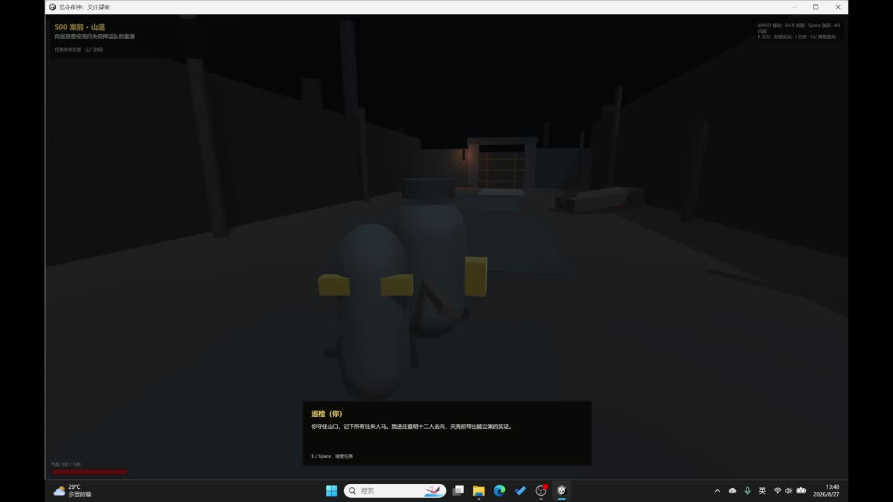

入殿路线
正门以声响和战斗换取直接进入；侧墙绕行换取低噪。路线回流到同一主流程，控制短关卡的制作范围。
让声音连接调查、机关与战斗风险，在一次地表到地下的探索中完成节奏转换。

我用破钟作为外院锚点，将调查、修复和开井作用于同一对象。地下先分开呈现敌人职能，终局再组合，要求玩家重新判断目标优先级。
正门以声响和战斗换取直接进入；侧墙绕行换取低噪。路线回流到同一主流程，控制短关卡的制作范围。
设计上把警钟与支援敌人放在不同方向，让玩家权衡先阻止增援还是先降低持续压迫。倒计时属于待试玩调整参数。
现有材料展示调查、钟体修复、下井、谜题、战斗、取得账册与撤离。当前是规则和动线验证灰盒，人物及场景并非正式美术。
敌人预读展示、长廊分段灯光与整体音频仍不完整。下一版优先改善入口视线和目标辨识，再调敌人参数；路线平衡也需要首次玩家测试。